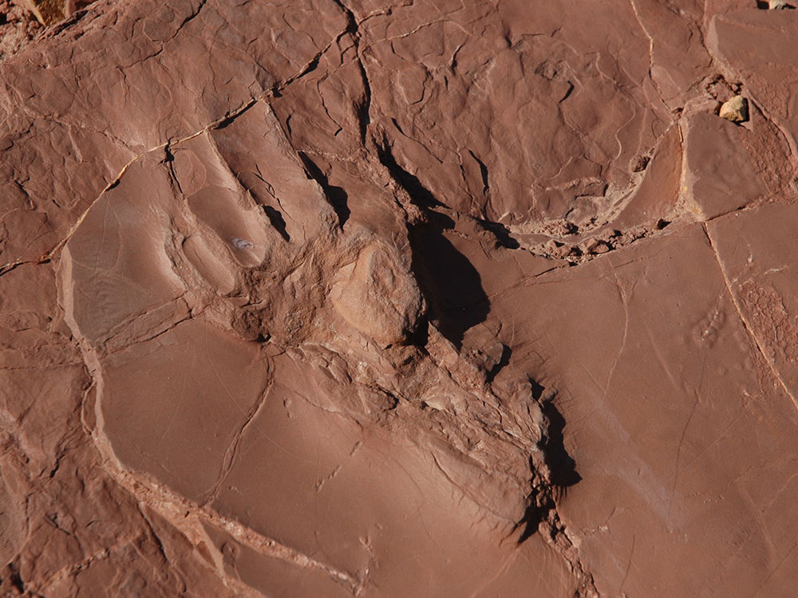
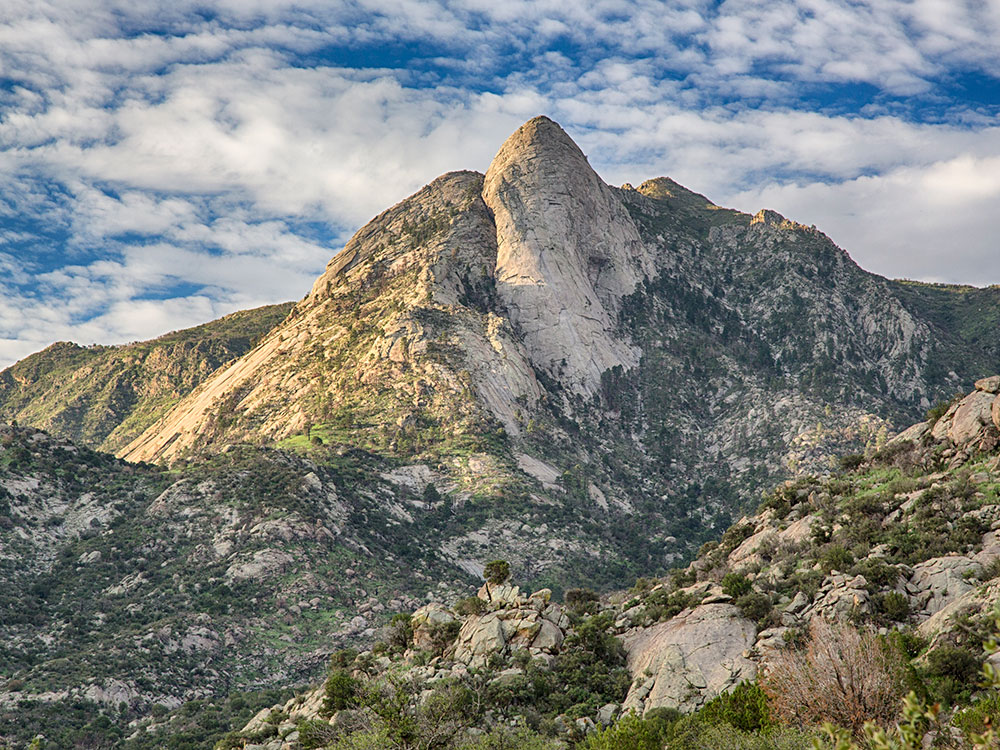
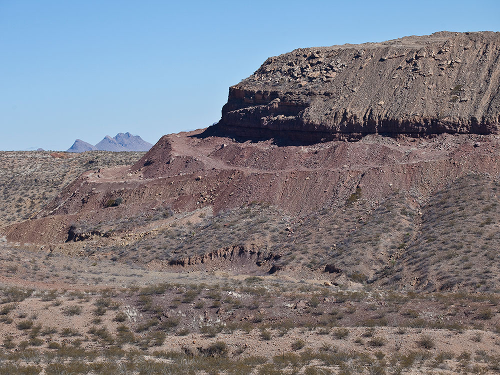
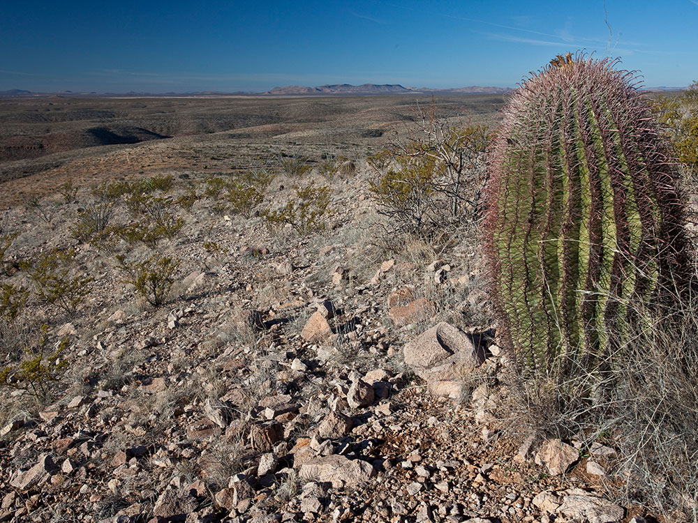
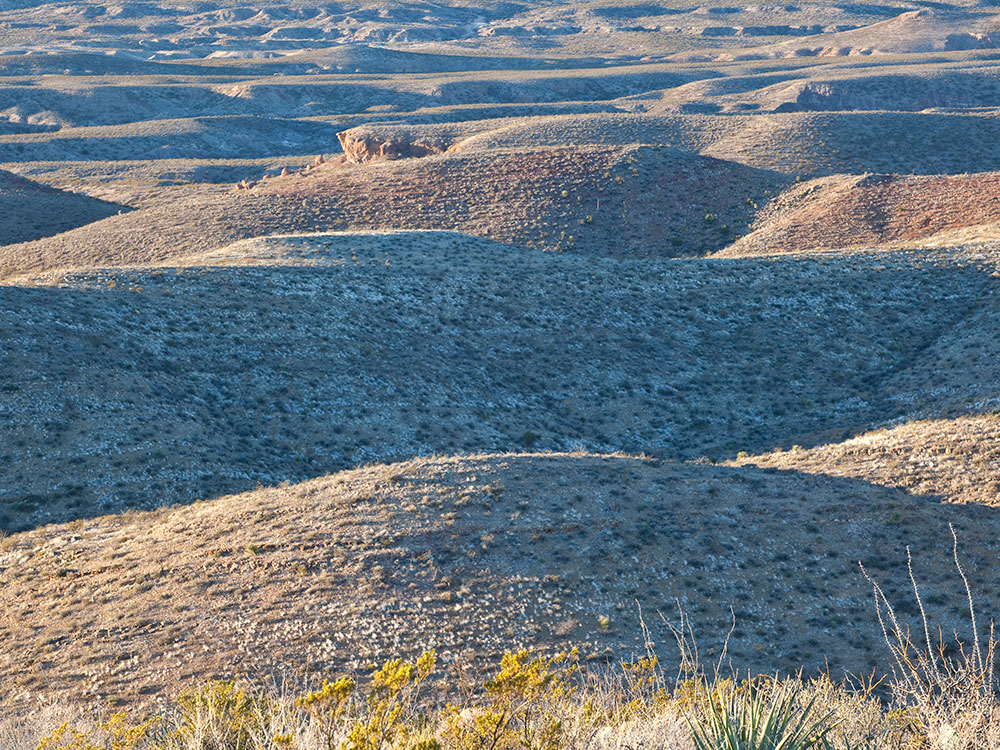
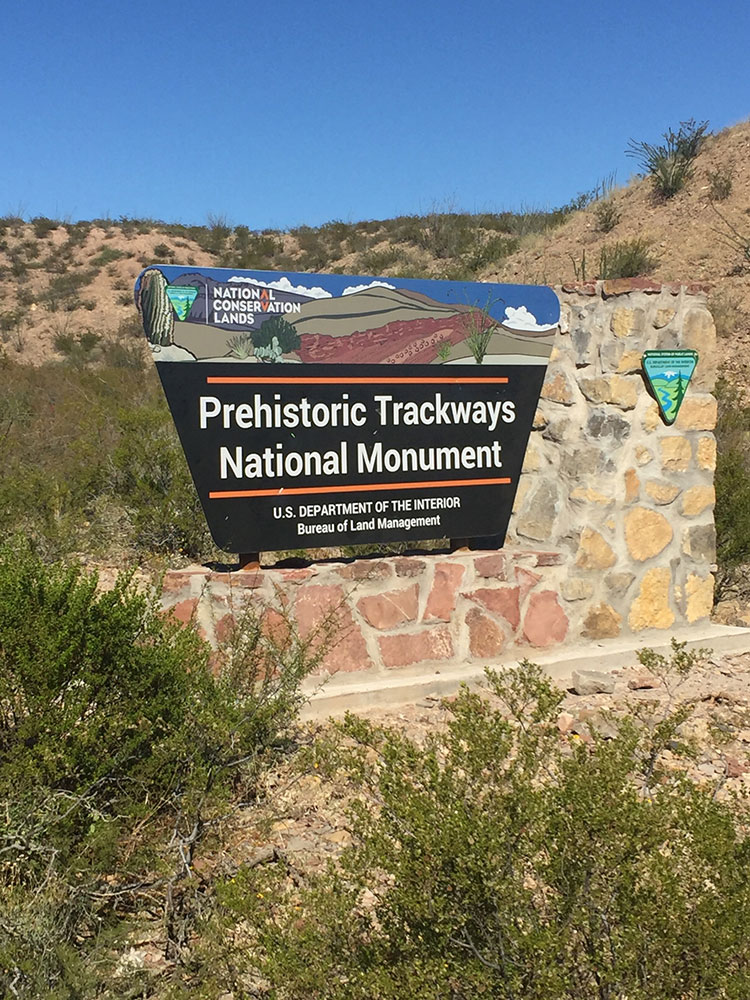

.jpg){kind=link}
Monument in the Robledo Mountains, near Las Cruces, includes a major deposit of Paleozoic Era fossilized footprints in fossil mega-trackways of land animals, sea creatures, and insects
General Information
Open year-round
How to Get There
From Las Cruces (10 mi): Take US‑70 west to Shalem Colony Trail, then follow dirt roads (high‑clearance recommended) to reach the trailhead area in the Robledo Mountains.
Overview
Prehistoric Trackways National Monument protects one of the world's most important fossil footprint sites in the Robledo Mountains west of Las Cruces. Preserved in the 280-million-year-old rocks of the Early Permian Hueco Group are thousands of tracks left by early reptiles, amphibians and insects, along with fossilized plants, giving a snapshot of an ecosystem that existed long before the dinosaurs. The 5,255-acre monument was established in 2009 and is managed by the Bureau of Land Management, in part to protect fossils that are fragile and have been vulnerable to theft and vandalism. It is popular with fossil enthusiasts, hikers and families who enjoy a remote, rugged desert outing, and some of the best slabs are displayed at the New Mexico Museum of Natural History and Science in Albuquerque and at museums in Las Cruces.
Access
The monument is in the Robledo Mountains, about 10 miles northwest of Las Cruces, and is reached only by car. From the city, visitors follow US-70 west to Shalem Colony Trail and then drive unpaved desert roads to the trailhead area, where a high-clearance vehicle is recommended, especially after rain. There are no developed facilities on site: no water, restrooms or visitor center. The trackways are not marked with large signs and can be hard to find, so downloading a BLM map or joining a guided hike offered by BLM staff is a smart option.
Seasons
The best time to visit is from fall through spring, when temperatures are comfortable for hiking in the open desert. Summer is extremely hot with little shade, and afternoon monsoon storms can make the dirt roads and washes impassable, so most visitors avoid midday summer visits. Winter days are generally mild, though nights can be cold and a rare storm can bring wind and snow. Fossils are exposed year-round, but spring wildflowers and cool weather make the best backdrop for exploring.
Things to Do
Hike to One of the World's Great Fossil Footprint Sites
Prehistoric Trackways National Monument offers a chance to see animal tracks that are far older than any dinosaur footprints. The area is a rugged desert landscape where visitors can look for fossils in place, as long as they respect the rules against collecting.
Visit the Discovery Site
The Discovery Site is the main destination, where fossilized footprints are visible in the rock. Interpretive information helps explain the animals that made the tracks and how they were preserved.
Hike the Ridgeline and Trackways Loop
Informal trails traverse the rugged terrain and lead to fossil sites and scenic viewpoints. The routes are not heavily developed, so navigation skills and plenty of water are important.
Join a Guided Hike
BLM interpretive staff and partners occasionally lead guided hikes to the trackways, which is the easiest way to find the best sites and learn about the science. Check with the BLM Las Cruces District Office for the current schedule.
Enjoy Desert Views of the Robledo Mountains
The monument sits at the northern tip of the Chihuahuan Desert, with ocotillo, yucca and cactus covering the slopes and wide views toward the Organ Mountains and the Rio Grande valley.
Top Trails
Discovery Site Trail
Length: Approximately 1 mile round trip
Elevation Gain: Moderate
Difficulty: Moderate
This short hike leads to the main fossil trackway area. The terrain is rocky and steep in places, and the route is not always clearly marked.
Ridgeline and Discovery Trail Loop
Length: Approximately 3 miles loop
Elevation Gain: Moderate
Difficulty: Moderate to Strenuous
This longer loop links the Discovery Site with ridge-top views of the Robledo Mountains and the surrounding desert. It is exposed and rugged, with little shade or water.
Visitor Centers
The monument has no visitor center, restrooms or drinking water on site. Information is available from the Bureau of Land Management Las Cruces District Office, and the BLM website offers maps, directions and rules for visiting. Some of the best-preserved fossil slabs are on display at the New Mexico Museum of Natural History and Science in Albuquerque and at the Las Cruces Museum of Nature & Science, which are good stops to learn more before or after a visit.
Camping and Lodging
There is no camping or lodging at the monument. Las Cruces, about 25 minutes away, has a wide range of hotels, restaurants and shops, and the historic village of Mesilla offers inns and dining nearby. Camping is available at Leasburg Dam State Park north of Las Cruces and at the Aguirre Spring Campground in the Organ Mountains, both within about an hour's drive. Check each property's website for current availability.
Some of the animals who may have left tracks in the Robledo Mountains include Dimetrodon, Eryops, Edaphosaurus, and multiple other pelycosaurs. There are at least 13 major trace fossils found at the monument.
The trackways can be difficult for the general public to find, as the monument is largely undeveloped with few facilities yet existing to aid fossil hunters. Guided hikes are periodically offered by BLM interpretive staff.
Geology
The monument lies along the western portion of the Rio Grande rift and is within part of the Robledo Mountains. It is made up of Cenozoic and Paleozoic (Hueco Group) sediments. The Hueco Group is Early Permian strata. Most of the monument is Permian and would have been underwater or along the coast of what was once the Hueco Seaway. The tracks can be found in the red rock which is called the abo red beds.
The monument is situated at the northern tip of the Chihuahuan Desert. Some examples of plants within the monument are ocotillo, mesquite, creosote bush, prickly-pear cactus, Torrey yucca, barrel cactus, sotol, agave and snakeweed. A few examples of animals are mule deer, rattlesnakes, desert cottontail, many species of lizards, and several species of birds.
This article uses material from the Wikipedia article and official pages for Prehistoric Trackways National Monument, New Mexico Nomad Guide, Visit Las Cruces, AllTrails Guide, New Mexico Tourism, released under the Creative Commons Attribution-Share-Alike License 3.0. Additional information from the Bureau of Land Management.
Featured Trails
#Placeholder, #License, via Wikimedia Commons; Image Size Adjusted
Ridgeline & Discovery Trail Loop
Difficulty: Moderate
Primary hike to the Discovery Site with chances to find fossilized footprints and panoramic desert views
#Placeholder, #License, via Wikimedia Commons; Image Size Adjusted
Robledo Mountain Trail
Difficulty: Moderate to Strenuous
Longer trail climbing into the Robledo Mountains with expansive views and access to remote fossil areas
#Placeholder, #License, via Wikimedia Commons; Image Size Adjusted
Trackways Loop Trail
Difficulty: Moderate
Desert loop trail featuring fossil-rich areas and views of the Robledo Mountains landscape

.jpg){kind=link}

.jpg){kind=link}

.jpg){kind=link}

.jpg){kind=link}

.jpg){kind=link}
